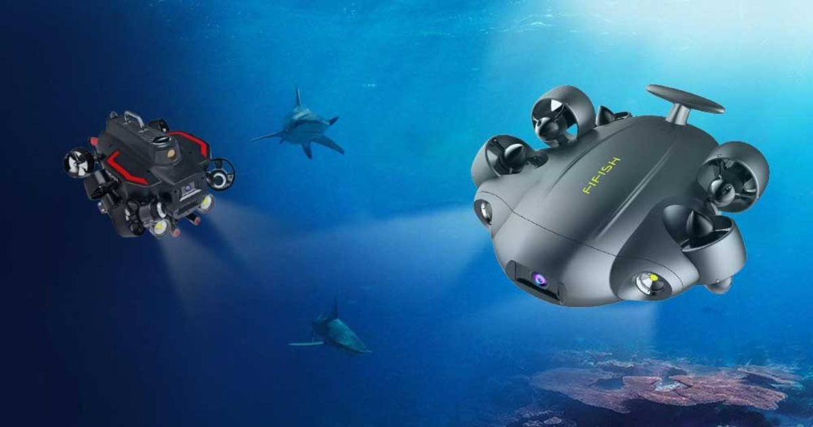

Real-Time Water Quality Monitoring
Advanced ESP32-powered underwater drones equipped with industrial-grade pH, Turbidity, and Temperature sensors. Monitor aquatic environments instantly through our integrated real-time dashboard.

Core Capabilities
Advanced Underwater Tech
Precision pH Sensor
Laboratory-grade pH monitoring with automatic temperature compensation for accurate acidity readings.
Turbidity Analysis
Optical sensors to measure water clarity and suspended solids in real-time, perfect for pollution tracking.
Thermal Mapping
High-accuracy temperature sensors to detect thermal stratification and environmental changes.
Live Dashboard
Instant data visualization via WiFi/Bluetooth, allowing you to track trends as the drone explores.
ESP32 Processing
Efficient data collection and transmission using the powerful dual-core ESP32 microcontroller.
Instant Alerts
Configurable threshold alerts that notify you immediately when water parameters go out of range.
Integrated Real-Time Dashboard
Our ESP32-based system doesn't just collect data—it visualizes it. The drone transmits sensor readings every 100ms, providing a seamless monitoring experience for environmental research.
-
Real-time sensor fusion via ESP32
-
WebSocket-based low latency data streaming
-
Historical data logging and CSV export
-
Customizable alert thresholds
-
Multi-device dashboard access
Gallery
Captured by AquaESP


Ready to Dive In?
Whether you're a researcher, hobbyist, or professional, we have the right underwater drone solution for you. Contact us for custom builds and pricing.